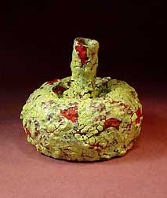
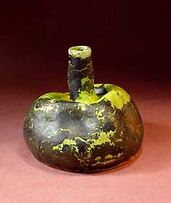

| Rascal Ware, Hairy Potter and Biloxi

This is the fourth chapter in a series of articles by Don Pilcher
on some of the characters that have been inspiring him and helping
him with creating his ceramic works. Feedback is welcome: Don Pilcher:
.
Vitreous Vicissitudes, by Georgette Ore (Chapter 4 in the 'Rascal
Ware' series)
|  |
Vitreous vicissitudes sounds
like an oxymoron but it isn’t. Last week we heard that
some of my Rascal Ware was actually accepted for exhibition.
I was 0 for 11 up till then and the air in the studio was
getting a little tight. As a bonus, the judge (who is now
referred to around here as St. Virginia) saw fit to anoint
these pieces with an award. This all sparked a lunchtime discussion
about judges, quality, who might be blind to it and other
touchy subjects. People were naming names and the conversation
coarsened very quickly. Blind justice is one thing. Blind
judges are another.
The upside of this brawl was that the new guy, Hairy Potter,
crossed a line and Junior fired his ass. The truth is that
Hairy’s first day on the job was his best and it was
downhill after that. He looked like an opportunity but turned
out to be just an opportunist; common enough in the art game.
The downside was that Pilcher tried to restore order and
elevate the discourse by posing questions nobody could (or
wanted to) answer. He can turn small talk into a seminar in
a heartbeat. That stuff flew at the U but we professionals
weren’t having any of it. |
|  |
Anyhow, back to judges and quality and all
that. The problem begins at the beginning and it hangs on
this notion: Some pots are better than others and if you work
hard, you can learn to make the better ones. So your teacher
says, “I’ll show you how it’s done.”
The line that usually doesn’t follow is this one; “By
the way, while I know these are really good pots, they are
frequently rejected by others…currently at a rate of
11 to 1. Take advanced ceramics and I’ll tell you why
that is.”
In advanced ceramics you learn that the disconnect between
the maker and the viewer or judge- is not a scandal, it’s
a mystery. For example, don’t we all see work published
in magazines all the time that is nothing special? Maybe even
on this very page. Well somebody likes it…a lot. The
explanation comes from our resident philosopher, Mosley Bunkham.
He embraces this disconnect as follows: “Art is a business
with no bottom, which is not to say that all of it is equal.
It’s just that where you stand on better and worse depends
entirely on where you sit.”
At Rascal Ware here’s where we sit. Find an empty chair.
Keep an open mind. Stay as long as it takes. It’s OK
to let them see you sweat. Think faster, work slower and let
the kilns cool even slower than that. Keep good records. Answer
your mail. Don’t become a slave to your cell phone.
Try not to make the same thing over and over. Keep coming
back and, as I said last time, go easy on the pork buffet. |
| |
|
| |
If you want to see more of these Rascal Ware
pieces you can go to the gallery at www.terraincognitostudios.com.
If you want to contact us directly, you can e-mail us at dpilcher2@juno.com.
continue (chapter 5)...
About Don Pilcher: American studio potter
and author. Pilcher earned a BFA at the Chouinard Art Institute
in Los Angeles in 1964 and an MFA at the Rhode Island School
of Design in 1966. He taught at the University of Illinois
at Urbana-Champaign from 1966-99, where he is now Professor
Emeritus. He makes wheel-thrown and altered functional ware.
Images & text © Don
Pilcher. Contact:
. |
Rascal Ware Chapter 1/Español
Rascal Ware Chapter 2/Español
Rascal Ware Chapter 3
Rascal Ware Chapter 4
Rascal Ware Chapter 5
Rascal Ware Chapter 6
More Articles
|
{kind=link}
{kind=link}